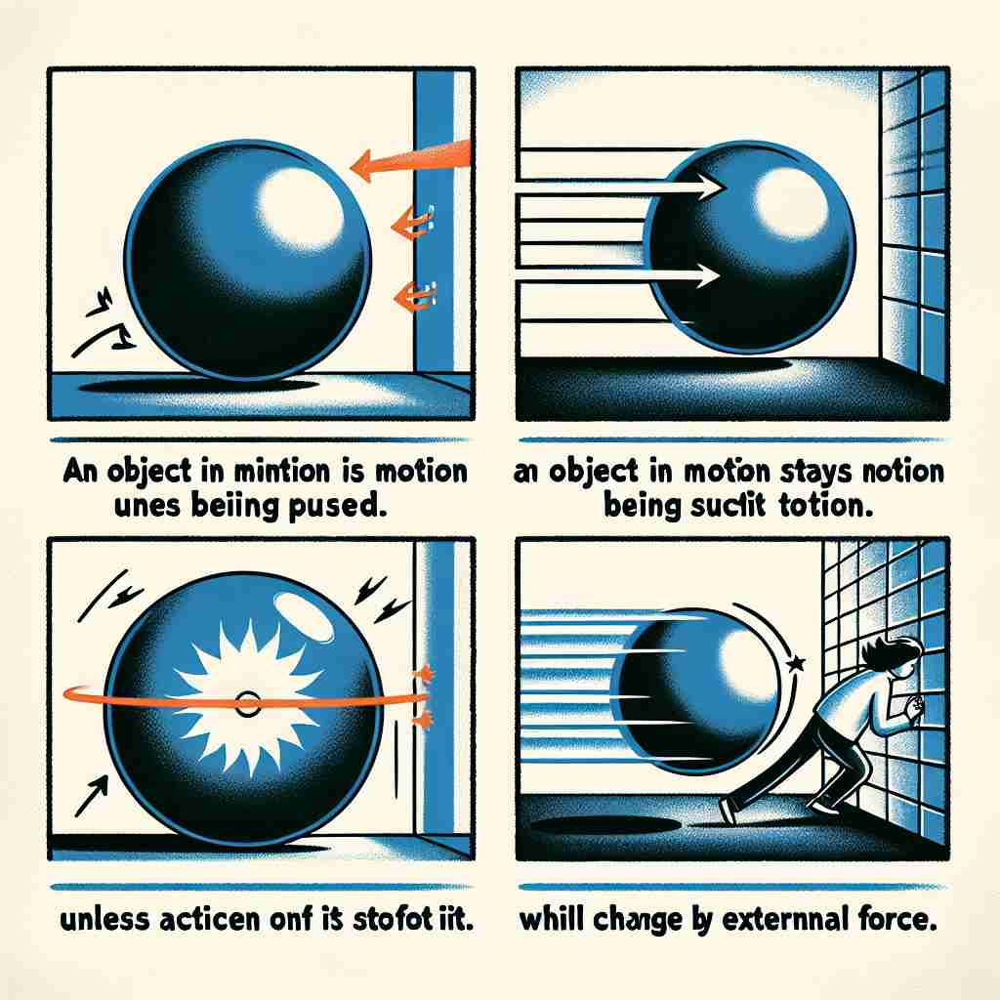

💬 The inertia of the ball helps it roll down the lane smoothly. 球的惯性帮助它平稳地在道上滚动。

💬 The law of inertia explains that a moving ball will keep rolling unless something stops it. 惯性定律解释了一个运动中的球会持续滚动，除非有什么东西阻止它。
💬 The inertia of the ball helps it roll down the lane smoothly. 球的惯性帮助它平稳地在道上滚动。
💬 The law of inertia explains that a moving ball will keep rolling unless something stops it. 惯性定律解释了一个运动中的球会持续滚动，除非有什么东西阻止它。
🧠 想象一个物体处于静止状态，需要外力才能使其移动。这种'保持不变'的特性就是'inertia'的核心含义。无论是在物理学中描述物体的运动状态，还是比喻人或组织对变化的抗拒，都源于这一核心概念。记住'不愿改变'这一特点，可以帮助你理解和记忆'inertia'的各种用法。
🔈 [ɪ'nɜːʃə]
🗝️ n. a tendency to remain unchanged 保持不变的倾向
🎭 想象一个冬日的早晨，你的闹钟响起，但你仍然躺在温暖的床上，不愿起身。尽管外界的一切都在呼唤你开始新的一天，但你保持着不变的状态。这种不愿改变的倾向正是'inertia'的核心含义。
💬 The company's inertia prevented it from adapting to new market conditions. 公司的惯性阻碍了其适应新市场环境。
🌳 由前缀 "in-"（否定或内部）和词根 "ertia"（来源于拉丁语，意为动作或活动）组成，表示一种物体保持现有运动状态的惯性或不活动状态。
💡 可以联想 "inertia" 为 "in" + "activity" 不动的状态，帮助记忆它在物理学中的含义，即保持当前运动状态的倾向。通过将惯性与静止或持续运动联系起来，更容易记住它的意思。
🗝️ n. the property of matter by which it retains its state of rest or uniform motion in a straight line, unless acted upon by an external force 物质保持静止状态或沿直线均匀运动的性质，除非受到外力的作用。
🎭 在一个实验室里，一位物理学家正在演示惯性定律。他将一个滚珠置于光滑的水平面上，轻轻推动一下，滚珠持续不断地以相同速度滚动，直到被另一块物体阻挡。这个实验展示了物质在没有外力作用下保持静止或匀速直线运动的性质，即'inertia'。
💬 The inertia of the heavy object made it difficult to start moving. 重物的惯性使得启动变得困难。
🤔 物理学中对"保持不变"状态的描述
🗝️ n. lack of activity or energy; sluggishness 缺乏活动或精力；迟缓
🎭 午后的咖啡馆内，一位作家正在努力完成稿件，但他感到疲惫而无精打采，手中的笔迟迟未动，心中有千言万语却无力表达。这种缺乏活力或能量的状态，正是'inertia'的一种表现。
💬 After lunch, a feeling of inertia overcame the office workers. 午餐后，办公室员工感到一阵倦怠。
🤔 从物理概念延伸到人或事物的"不活跃"状态
🗝️ n. resistance or disinclination to motion, action, or change 对运动、行动或变化的抵抗或不情愿
🎭 在一个繁忙的公司会议中，经理宣布了新的项目计划，但团队中的某些成员显得有些犹豫，不愿立刻行动或改变自己的工作方式。他们的迟疑和抗拒正好体现了'inertia'中的对行动或变化的抵触。
💬 Political inertia has prevented any meaningful reform in the country. 政治上的惰性阻碍了该国任何有意义的改革。
🤔 对改变的"抗拒"，保持现状的倾向